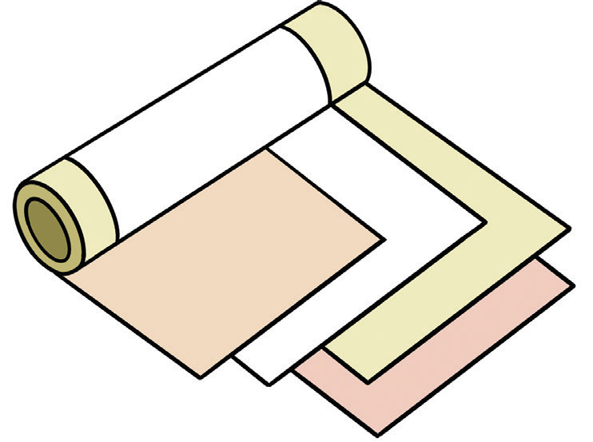
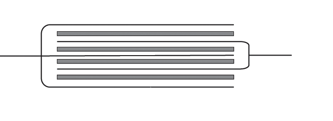

Types of capacitors
Different types of capacitors depend on the dielectric materials used to make them. These include the following:
1. Paper or plastic capacitors
A paper or plastic capacitor has metal foil strips as its conductor plates. Waxed paper or plastic forms the insulating material. Polyester film can also be used as a separating or insulating material. See Figure 1.28. Insulating materials are rolled up and sealed inside a metal box to prevent moisture from entering, which could reduce the insulation.

2. Mica capacitor
Note that any arrangement of two conductors separated from one another by an insulator forms a capacitor. In an ordinary laboratory, this could be two sheets of metal foil isolated by small pieces of plastic in between, with air as the insulating material. In a mica capacitor, the sheets of metal foil are separated by strips of mica, as shown in Figure 1.29. Mica is preferred because it is a natural mineral and splits easily into very thin sheets.

3. Electrolytic capacitor
Metal sheets are separated by paper previously soaked in a chemical compound (Figure 1.30). The soaked paper is not an insulating material. As the capacitor charges, a thin layer of aluminium oxide is formed on the positive plate, thereby providing a thin insulating layer between the plates. The thinner the layer, the higher the capacitance. Electrolytic capacitors are connected with great care. Their ends are labelled positive or negative as a safety precaution because a wrong connection can lead to an explosion.